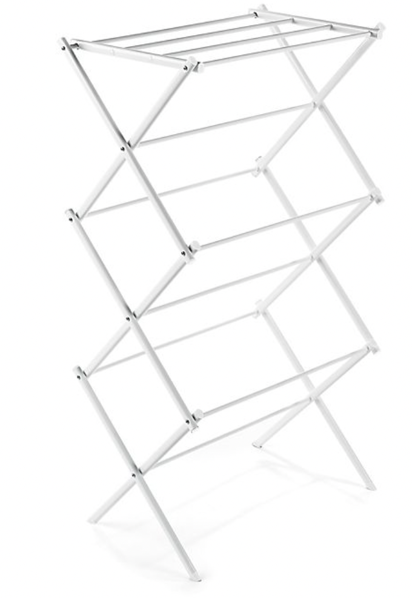

A3: Mechanism and virtual mechanism
Making the mechanism
My inspiration came from my drying rack and this video on how to make an hydraulic scissor lift.


Making the scissor lift was pretty straightforward. I cut 8 strips of cardboard and connected them with paper pins and cut paper straws. Then I sowed my sensor (which changed the resistance significantly! My range went from 0-1023 to ~800-1023). I had two main issues with this assignment and the first was figuring out how to instrument my mechanism with the sensor. I ended up making a little spring out of cardboard and placing the sensor and the bottom pole of the lift. Actuating the mechanism would then result in pressure changes on the sensor.
Testing the sensor in Arduino.
Making a virtual mechanism


This is the part of the assignment that didn't go so well, i.e. the "second issue." I basically couldn't get my shapes to move the way I wanted, despite following Nadya's instructions on how to use Kangaroo. The coincident component did not make the starting points of my curves coincide, so there was no constrain. At the same time, they seemed overly constrained by the fact that I initally input the start of my six curves (3 for each shape) as part of my GoalObjects. I tried three different configurations of shapes and curves but it still did not work.


I retraced my steps and ended up starting over completely, thinking that maybe the ways the shapes were lined up mattered but the simulation still wasn't behaving the way I expected.
In the end I used the same visualization as last time.